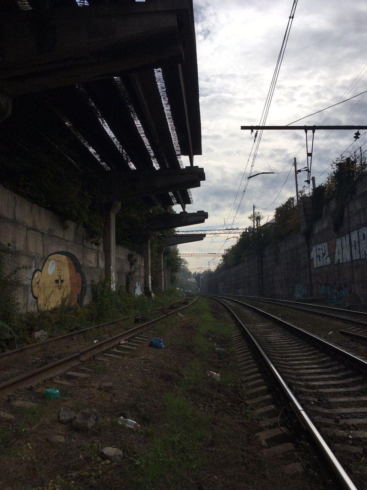
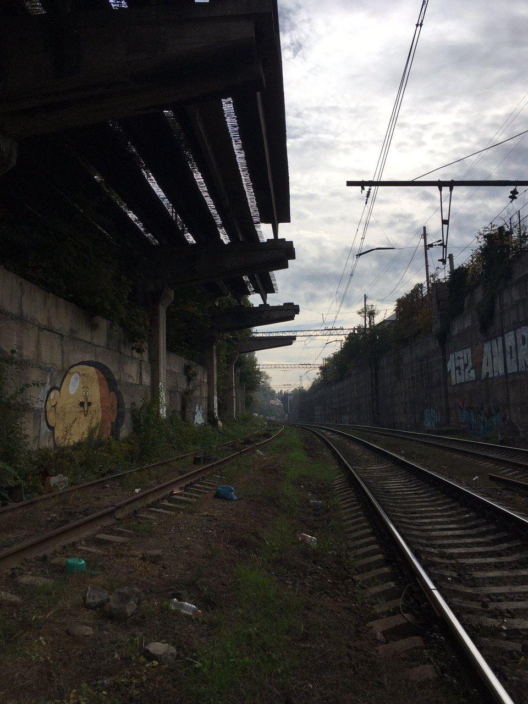

Located at a railway site on the urban periphery of Tbilisi, this abandoned construction was, over time, overtaken by vegetation. The site consists of concrete and parallel rows of iron rods, each positioned above deep concrete cavities.
These cavities function as resonant chambers, amplifying and coloring the percussive impact of the metal — turning the place into a large-scale acoustic instrument, situated in a transitional state between infrastructure and ruin.
Svanetisubani, Tiflis, Saqartvelo. 2021 curfew.
 
